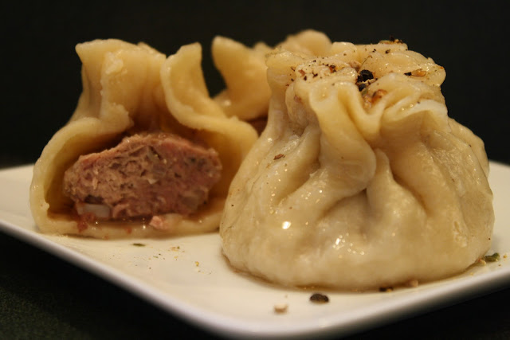
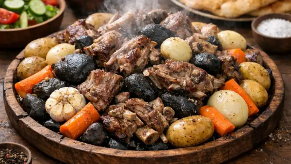

Mongolian cuisine is, broadly speaking, centred around meat and flour. This is largely due to the historically nomadic lifestyle of the Mongolian people, as well as the Central Asian climate being ill-suited to agriculture. Furthermore, Mongolian cuisine boasts one of the most diverse ranges of meat varieties of any culinary tradition in the world.

Buuz
Steamed dumplings filled with juicy minced meat and traditional spices.
£8.99
Khuushuur
Crispy fried meat pastry popular during Mongolian festivals.
£10.99
Tsuivan
Handmade noodles stir-fried with vegetables and tender beef.
£12.99
Airag
Airag is a traditional Mongolian drink made from fermented mare/horse milk. It has a slightly sour, mildly alcoholic taste and is commonly consumed during the summer, especially by nomadic families in Mongolia.
£5.99

Boodog
Traditional Mongolian barbecue cooked using heated stones.
£19.99
Khorkhog
Slow-cooked meat dish prepared with vegetables and hot stones.